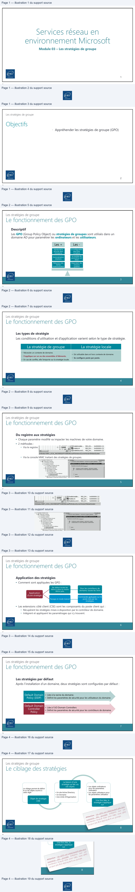
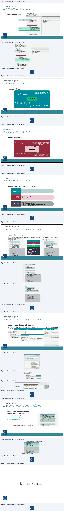
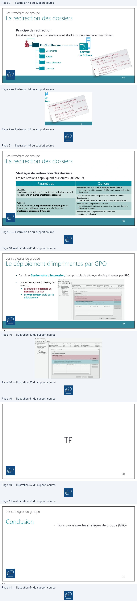
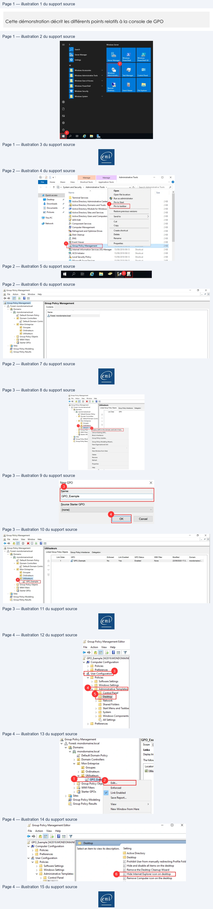
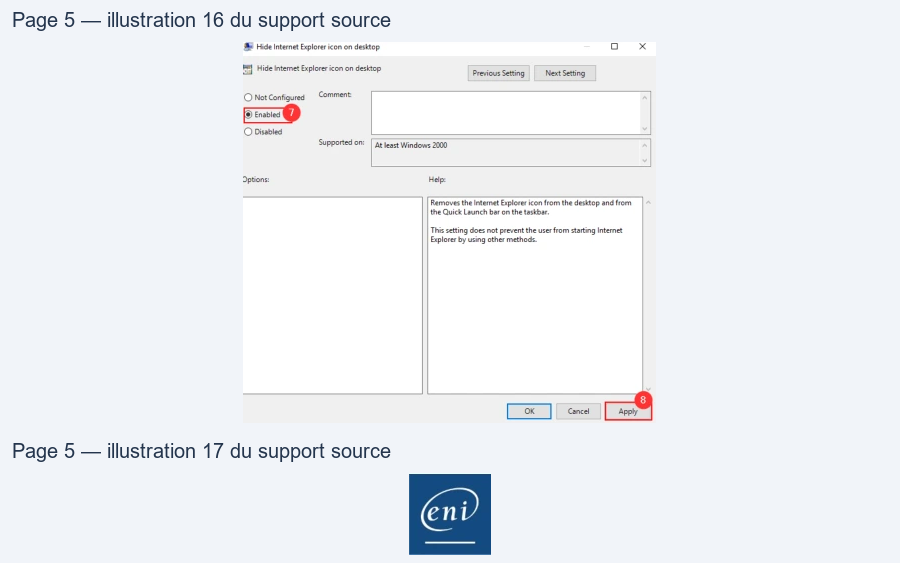
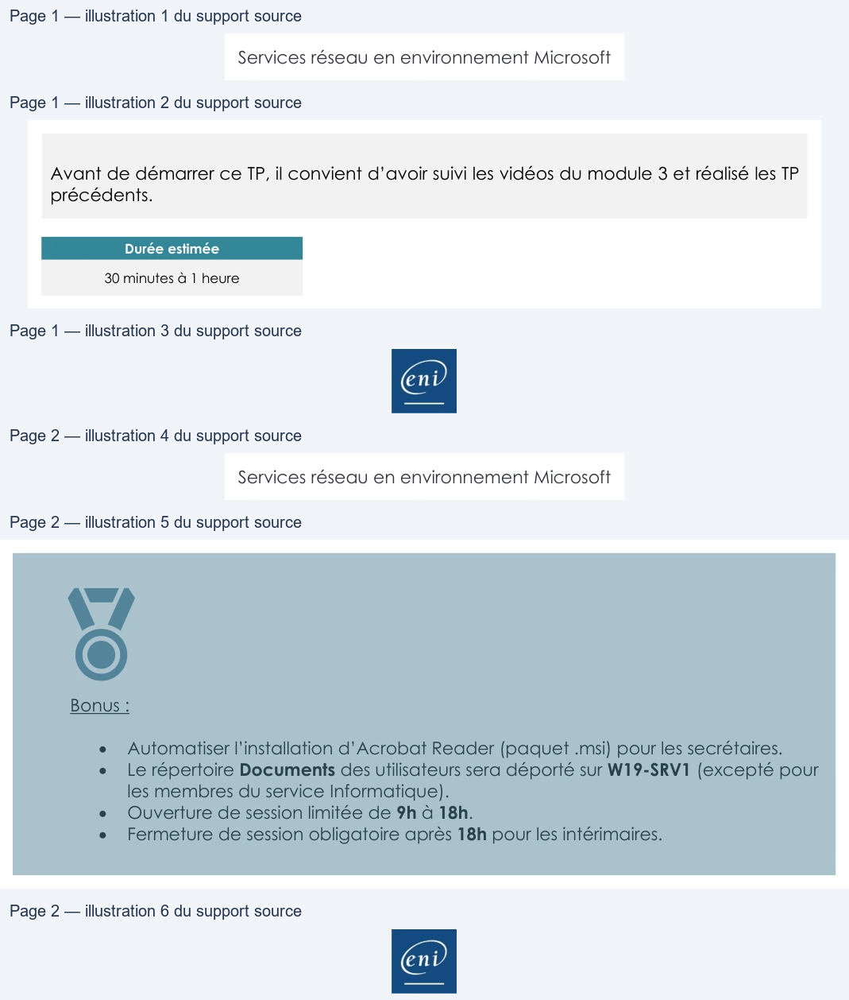

Module 03 — Les stratégies de groupe¶
La transcription du support Drive et l’aide pédagogique sont séparées pour rendre leur provenance explicite.
SOURCE DRIVE · TRANSCRIPTION DU SUPPORT
Le contenu des documents du dossier TSSR est transcrit ci-dessous, page par page. Les textes, tableaux et illustrations sont intégrés à la page Web ; aucun PDF ENI n’est diffusé par ce lecteur. Les versions et les consignes restent celles des supports de formation. Les compléments IA sont conservés dans leur onglet distinct.
Support · Module 03 – Support de cours · 11 pages transcrites
Page 1
Services réseau en
environnement Microsoft
Module 03 – Les stratégies de groupe
1
1
Les stratégies de groupe
Objectifs
• Appréhender les stratégies de groupe (GPO)
2
2
Page 2
Les stratégies de groupe
Le fonctionnement des GPO
Descriptif
Les GPO (Group Policy Object) ou stratégies de groupes sont utilisés dans un
domaine AD pour paramétrer les ordinateurs et les utilisateurs.
Les +
Les -
La configuration
Ajoute de la
sécurité dans
l’entreprise
peut être
complexe
Automatisation
Le nombre de
paramètres est
d’actions
élevé
Réduction des
Dépendant des
tâches
d’administration
versions
système
3
3
Les stratégies de groupe
Le fonctionnement des GPO
Les types de stratégie
Les conditions d’utilisation et d’application varient selon le type de stratégie.
La stratégie de groupe
La stratégie locale
• Nécessite un contexte de domaine.
• Est utilisable dans et hors contexte de domaine.
• S’applique sur un ou des ensembles d’éléments.
• Se configure poste par poste.
• En cas de conflits, elle l’emporte sur la stratégie locale.
4
4
Page 3
Les stratégies de groupe
Le fonctionnement des GPO
Du registre aux stratégies
• Chaque paramètre modifié va impacter les machines de votre domaine.
• 2 méthodes :
• Via le registre
• Via la console MMC traitant des stratégies de groupes.
5
5
Les stratégies de groupe
Le fonctionnement des GPO
Application des stratégies
• Comment sont appliquées les GPO :
Pour les contrôleurs de
domaine, toutes les 5min
Par défaut toutes les
90min à plus ou moins
30min près.
Application
d’une stratégie
Commande gpdupate sur le
Passage en mode manuel
poste visé par les
stratégies.
• Les extensions côté client (CSE) sont les composants du poste client qui :
• Récupèrent les stratégies mises à disposition par le contrôleur de domaine.
• Intègrent et appliquent les paramétrages qui s’y trouvent.
6
6
Texte relevé dans les illustrations
DT GE M EEnbeinsteler…
REG-DW... 0x00000001(1)
rs bar | |BRenabiewua
REG_DW...
0x00000001 (1)
4
»
%]EnableSecureUl.. REG_DW...
0x00000001 (1)
[ordinateur\HKEY_LOCAL MACHINE\SOFTWARE Microsoft Windows CurrentVersion\Poldes\System
15 3} tige Orénateest
al
svete
=
Paramètrede:
© & Catroncine
Gen
camps dota
| exter cn dan dé
181 LD Stratégie
de résolution
denoms
=) Suits(énarageer&)
RE
© i Frames
de sécté
PR
EES
1
Li Sté
decomptes
A Sainte
en no dappcboiond'noter
53 Da Sratépeslocaes
1g
Sig
ue
63
Da
ret
desrasusa
pr
none
65 25 Pare feu widows ave fonctions avancées de
C Désacié
2)
FT raies da csteonre de eee réseau
env
End
Page 4
Les stratégies de groupe
Le fonctionnement des GPO
Les stratégies par défaut
Après l’installation d’un domaine, deux stratégies sont configurées par défaut :
• Liée à la racine du domaine.
• Définit les paramètres de sécurité pour les utilisateurs du domaine.
Default Domain
Policy (DDP)
Default Domain
Controller
• Liée à l’UO Domain Controllers
• Définit les paramètres de sécurité pour les contrôleurs de domaine.
Policy
7
7
Les stratégies de groupe
Le ciblage des stratégies
La liaison d’une
stratégie se fait via
Le ciblage permet de définir
le ou les objets soumis à
cette règle
ces objets
• Les objets ordinateurs
pour les paramètres
ordinateur
• Les objets utilisateurs pour
les paramètres utilisateur
• Un site Active Directory
• Un Domaine
• Une Unité d’Organisation
Objet de stratégie
créé
Une fois liée, la
stratégie s’applique
sur
8
8
Texte relevé dans les illustrations
End
| il
|pe
Oe
\
=
7
ni
\
Recent mescroopepas aux
ane de gypee veces out uw
pee qua eles covtees ant are
wepeutpias wereopinurgrou

Page 5
Les stratégies de groupe
Le ciblage des stratégies
La console de gestion
Conteneurs de liaisons
Liaisons de stratégies
Conteneur des stratégies
du domaine
9
9
Les stratégies de groupe
Le ciblage des stratégies
Ordre de traitement
Les stratégies héritées sont
Les stratégies sont héritées du
appliquées avant celles du
parent vers l’enfant.
conteneur courant.
Priorités et
héritage
Les stratégies dont le numéro
d’ordre est le plus élevé sont
d’abord appliquées
Les stratégies marquées
Appliqué deviennent prioritaires.
(au sein d’un même conteneur).
10
10
Texte relevé dans les illustrations
Li Gestion de stratégie de groupe
|G Fichier
Action
Affichage
Fenêtre
2
e+2r0
8
8m
FycS de stratégie de groupe
Objets de stratégie de groupe dans eni.local
À
Foret: enilocal
=
Contenu |
Délégation
v I Domaines
Die
_
i Defaut Domain Controlers Poicy
>a
Bordeaux
hem Domain Policy
> Bl Domain Controllers
=] Fond_ecran
v
Gi Nantes
v Bl Services
>
St
Rennes
3]
Utilisateurs
2} Objetsde stratégiedegroupe
LJ Default Domain Controllers Policy
J Default Domain Policy
Fond ecran
Filtres WMI
> [Gj Objets GPO Starter
iB Sites
57 Modélisation de stratégie de groupe
2)
1 Résultats de stratégie de groupe
env
End
Page 6
Les stratégies de groupe
Le ciblage des stratégies
Ordre de traitement
Si les stratégies définissent des paramètres
Un objet peut être soumis à plusieurs
distincts, la résultante est le cumul de ces
stratégies
paramètres
Valeurs conflictuelles
/
Paramètres
complémentaires
Si plusieurs stratégies appliquant des valeurs
La dernière stratégie appliquée l’emporte
distinctes d’un même paramètre à un même
objet existent, c’est l’ordre d’application qui
La plus proche de l’objet
définira la valeur prise en compte.
11
11
Les stratégies de groupe
Le ciblage des stratégies
Les possibilités de restrictions de liaison
d’héritage
• S’active sur un conteneur.
• Annule la prise en comptes des stratégies héritées de conteneurs parents.
• Impacte toutes les stratégies héritées.
Le blocage
• Permet d’outrepasser le blocage d’héritage.
• Rend la GPO prioritaire
Le paramètre
Appliqué
• De sécurité
• Restreint la lecture et l’application de GPO.
• Des règles de contrôle d’accès pour accorder ou ôter des privilèges.
• WMI : limiter l’application grâce aux requêtes WMI
Les filtres
12
12
Lecture continue du texte source
Les stratégies de groupe
Le ciblage des stratégies
Ordre de traitement
Si les stratégies définissent des paramètres Un objet peut être soumis à plusieurs distincts, la résultante est le cumul de ces stratégies paramètres
Valeurs conflictuelles
/
Paramètres
complémentaires
Si plusieurs stratégies appliquant des valeurs
La dernière stratégie appliquée l’emporte distinctes d’un même paramètre à un même
La plus proche de l’objet objet existent, c’est l’ordre d’application qui
définira la valeur prise en compte.
11
11
Les stratégies de groupe
Le ciblage des stratégies
Les possibilités de restrictions de liaison
Le blocage • S’active sur un conteneur.
d’héritage •• AnnuleImpactelatoutesprise enles comptesstratégiesdeshéritées.stratégies héritées de conteneurs parents.
Le paramètre • Permet d’outrepasser le blocage d’héritage.
Appliqué • Rend la GPO prioritaire
• De sécurité
Les filtres •• RestreintDes règlesladelecturecontrôleet l’applicationd’accès pourdeaccorderGPO. ou ôter des privilèges.
• WMI : limiter l’application grâce aux requêtes WMI
12
12Page 7
Les stratégies de groupe
La mise en œuvre des stratégies
Les domaines impactés
Les domaines impactés sont représentés ci-dessous, nous les verrons par la suite en détail
Déploiement applicatif
Scripts
Sécurité
Configuration
• Système
• De composants
intégrés
• D’applications tierces
13
13
Les stratégies de groupe
La mise en œuvre des stratégies
Les paramètres de stratégie de groupe
Un point de configuration est associé à un paramètre de GPO et dispose des caractéristiques
suivantes
Nom
Etat
Support
Description
Commentaire
14
14
Texte relevé dans les illustrations
_5J Stratégie Fond_ecran [CDOT.ENI.LOCAL
Yl Configuration ordinateur
v 18 Configuration utilisateur
VI Stratégies
v D
Stratégies
[i Installation de logiciel
[ij Installation de logiciel
v LS Paramètres Windows
Y [I Paramètres Windows
IE Scripts (démarrage/arrét)
>
iB Paramètres de sécurité
> ti Imprimantes déployées
> ( Redirection de dossiers
> Eh Paramètres de sécurité
> alu QoS basée sur la stratégie
> all Qos basée sur la stratégie
> ti Imprimantes déployées
v I Modèles d'administration
: définitions de stratégies |
D Modèles d'administration
: définitions de stratégies
> 1 Composants Windows
> [ Bureau
Imprimantes
> I Composants Windows
> [M Menu Démarrer et barre des tâches
Dossiers partagés
> [3 Panneau
de configuration
> Di Menu Démarrer et barre des tâches
> [I Réseau
> [ Panneau
de configuration
Serveur
> Gi Réseau
>
[ Système
> D Système
ey)
IE Tousles paramètres
Ti Tous les paramètres
TE Stratégie Fond ecran [CDOLENILOCAU
Creer,
CE:
2 Configuration ordinateur
naine
en
VE
Srtégies
se
>
1 Paramètredu logiciel
Le
> 2 Paramètres Windows
en =
> El Composants Windows
Activer l'impression Internet
Paramètre
2] imprimantes
EM
Active impression Intemet
1
-
LI
as
ae
Rion
ce
Modifier
Lepxamêtre de tégie
5) Assistant Ajout d'imprimante - Page d analyze réseau (rze..
RE
_—
Windows 2000 uniquement
IE) Autoriser la publication des imprimantes
ee
LE Autoriser le nettoyage des imprimantes publiées
acorn
End
Page 8
Les stratégies de groupe
La mise en œuvre des stratégies
Les modèles d’administration
Ils permettent de configurer
• Le système d’exploitation
• Des composants système
• Des outils Microsoft
Fichiers stockés dans le partage SYSVOL
15
15
Démonstration
16
16
Texte relevé dans les illustrations
% 1) Modèles d'administration : définitions de stratégies
. Imprimantes
>
Menu Démarrer et barre des tâches
> Ii Microsoft Office 2016 (ordinateur)
> ©) Microsoft PowerPoint
2016 (ordinateur)
> 15 Panneau
de configuration
> © Réseau
Serveur
>
(5) Skype Entreprise 2016
> © Système
mm ——_ © Tous les paramètres

Page 9
Les stratégies de groupe
La redirection des dossiers
Principe de redirection
Les dossiers du profil utilisateur sont stockés sur un emplacement réseau.
Profil utilisateur
Documents
Serveur
de fichiers
Bureau
Menu démarrer
Contacts
17
17
Les stratégies de groupe
La redirection des dossiers
Stratégie de redirection des dossiers
Les redirections s’appliquent aux objets utilisateurs.
Paramètres
Options
Redirection vers le répertoire d’accueil de l’utilisateur
• Les nouveaux utilisateurs ne bénéficieront pas de redirection
de dossiers.
De base :
Les dossiers redirigés de l’ensemble des utilisateurs seront
stockés dans un même emplacement réseau
Rediriger vers l’emplacement suivant
• Les dossiers redirigés des utilisateurs se trouveront dans le
même sous-dossier
Créer un dossier pour chaque utilisateur sous le chemin
d’accès racine.
• Chaque utilisateur disposera de son propre sous-dossier.
Avancé :
En fonction de leur appartenance à des groupes, les
dossiers des utilisateurs seront stockés dans des
emplacements réseau différents
Redirection vers l’emplacement du profil local
• Arrêt de la redirection
18
18
Texte relevé dans les illustrations
End
para dugosse"one 3
°
payee
powcr Oe total pour es
sree ese D>
o yi oee Rise
. use au
gosse" &no aedose aan£
vt gosse"eyes
End
| Paramètres | Options |
| Debase: Lesdossiersredirigésdel’ensembledesutilisateursseront stockésdansunmêmeemplacementréseau | Redirectionverslerépertoired’accueildel’utilisateur • Lesnouveauxutilisateursnebénéficierontpasderedirection de dossiers. |
| Créerundossierpourchaqueutilisateursouslechemin d’accès racine. • Chaque utilisateur disposera de son propre sous-dossier. | |
| Avancé: Enfonctiondeleurappartenanceàdesgroupes les , dossiersdesutilisateursserontstockésdansdes emplacementsréseaudifférents | |
| Redirigerversl’emplacementsuivant • Lesdossiersredirigésdesutilisateurssetrouverontdansle même sous-dossier | |
| Redirectionversl’emplacementduprofillocal • Arrêtdelaredirection |
Page 10
Les stratégies de groupe
Le déploiement d’imprimantes par GPO
• Depuis le Gestionnaire d’impression, il est possible de déployer des imprimantes par GPO.
•
Les informations à renseigner
seront :
•
La stratégie existante ou
nouvelle à utiliser.
•
Le type d’objet ciblé par le
déploiement
19
19
TP
20
20
Texte relevé dans les illustrations
i
Fir
scion
Mme?
COEL-EEL
TE)
‘Wp
Gesondetmpresion[nom aeinmate
Senadeefi.
Twas
Nomassenea Nem pase
Vern
dopit
2 epee
[es Microsoft Prat to POF
Pré
o
CDOI (local)
Microsoft
Print To PDF
100.1763.
©
Hsevantinrsion |ict
25 comet
iter
©
Coole) Mom FSDecament
tered MA
Pie
eee
2 Fomars
Dyer aca mipede prupe
x
À
pore
9e Impnmantes
=
Eee
Da ot amer
]
Comteseni ge
Dcore
ce poe!
eee
mereamet
Uitaateurs auxquels s'applique cet objet de sratége degroupe (par utter)
De
Gras
rch ctcbt eaedepue Eu artes)
sarin
Contorate oe
es
scone
semeot
env
env
Page 11
Les stratégies de groupe
Conclusion
• Vous connaissez les stratégies de groupe (GPO)
21
21

Référence du document : 10ZzrWSG0Yv4qDn5q0uoc9aIXFqFdfMX4 · SHA-256 6a79d7f43db84631…
Démonstration · Fiche d‚mo 1 - Appr‚hender la console GPMC · 5 pages transcrites
Page 1
Services réseau en environnement Microsoft
Appréhender la console
GPMC
Démonstration 01 du module 03
Cette démonstration décrit les différents points relatifs à la console de GPO
Déroulement
•
Prérequis
Avoir installé et configuré une VM Windows Server.
Avoir renommé correctement la VM.
Avoir attribué une IP fixe à la VM.
L’objectif de la GPO qui va être créée est de cacher l’icône Internet Explorer pour les utilisateurs
d’une OU spécifique.
•
Ouverture de la console MMC
Après l’ouverture de session sur la session du domaine, cliquer sur le menu démarrer (1), puis sur la
tuile Windows Administrative Tools (2).
Page 1/5
© ENI – Tous droits réservés
Texte relevé dans les illustrations
Windows
Windows
AA
Settings
Server Manager | PowerShell
PowerShellSE
2
w
Windows
Remote
DB) Windows security
Desktop.»
Event Viewer
File Explorer
a
a
(0)
1
soon
em
&
Page 2
Services réseau en environnement Microsoft
•
Ajout du raccourci dans la barre des tâches
Dans l’explorateur qui vient de s’ouvrir, faire un clic droit sur la ligne Group Policy Management (1),
puis sur le menu Pin to taskbar (2). L’icône (3) apparaît.
•
Accès à la console GPMC
Cliquer sur le raccourci précédemment créé afin de voir la console des GPO apparaître.
Page 2/5
© ENI – Tous droits réservés
Texte relevé dans les illustrations
|
M
?
Manage
Manage
Administrative Tools
_
o
x
Home
Share
View
—Shortet Tools
_Appiation Tools
e
À
25« System
and Security
> Administrative
Tools
>
1! | Search Administrative
Toc
2
Name
°
co
Size
.
# Quick access
Open file location
I Desktop
+
Terminal Services
@ Run as administrator
FA Active Directory Administrative Cents
pin to Start
2KB
Ÿ Dounlosds
oF
2
5
28 Active Directory Domains and Trusts NWP pin
totaskbar|
2KB
3] Documents
#
58 Active Directory ModuleforWindows
2KB
=| Pictures
#
iB Active Directory Sites and Services
CSSDEEE
2kB
Gi This Pc
a Active Directory Users and Computers
Send to
>
2KB
E7 ADs! Edit
a
KB
® Network
® Component Services
=
2KB
0!
HF Computer Management
us
2KB
#à Defragment and Optimize Drives
Create shortcut
2KB
7% Disk Cleanup
Delete
2kB
& DNS
Rename
2KB
D
fll Event Viewer
Properties
2KB
#2 Group Policy Management
rare
ere
2KB
Bq Internet Information Services (IIS) Manager
15/09/2018
09:13
Shortcut
2KB
®, iSCSI Initiator
15/09/2018
09:12
Shortcut
2KB
ah Local Security Policy
9/20
3
Shortcut
2KB
WP. Mirenenfs Kove Caniiree
EINOIIN1O0012
Chardon
avn
i:
fe
EH!
?
aon
€
nm
+
BOE
LE Group Policy Management
-
o
x
%
File
Action
View
Window
Help
- sx
i)
(@
CE
¢9\m
&
@
L& Group Policy Management
Group Policy Management
+ A Forest: mondomainelocal
Contents
+ Æ Domains
+ #3 mondomainelocal
Name
sl Default Domain Policy
A
Forest: mondomaine local
+
El Domain Controllers
si] Default Domain Contre!
+
El Mon Entreprise
il Groupes
il Ordinateurs
Bi Utilisateurs
} Group Policy Objects
& wn Filters
BB Starter GPos
Bi Sites
48 Group Policy Modeling
© Group Policy Results
Page 3
Services réseau en environnement Microsoft
•
Création GPO utilisateur
Faire un clic droit sur la ligne Utilisateur (1) ou tout autre OU, puis sur le menu Create GPO in the
domain, and lin kit here… (2). Indiquer le nom de la GPO (3) puis cliquer sur le bouton OK. La GPO
apparaît (4).
Page 3/5
© ENI – Tous droits réservés
Texte relevé dans les illustrations
A Group Policy Management
BZ
File
Aion
View
Window
Help
-+2m
0 xa
=
[ik Group Policy Management
Utilisateurs
© A Forest mondomainelocal
Led Goup Pole Objects Group
Poy Inertance Delgaton
New
GPO
x
+ M Domains
3
~ #3 mondomainelocal
Unk Oder
GPO
ia] Default Domain Policy
5
pme
Name:
i] Default Domain Conte!
~ 8) Mon Entries
GPO_Exemple
À Groupes
1 EE
Daoem|
Sous Sate
5} WMIFiter
Unk
an basting GPO.
.
fee oe
(none)
Oh Sites
À Smart Up.
4
2 Group Policy Resu | Group Policy Modeling Wizard.
|
|
New Organizational Unit
Ca
View
‘NewWindow
trom Here
Delete
Rename
Refresh
Properties
Help
Lx Group Policy Management
ad
a
x
I
File
Action
View
Window
Help
-i*s
-+ 4m
0 XOa\am
L& Group Policy Management
Utilisateurs
+ À Forest mondomainelocal
Linked Group Poly Objects GroupPokcy Inhertance | Delegation
+ [ Domains
+ #5 mondomainelocal
Link Order
GPO
Enforced
Link Enabled
GPO Status
WMI Filter
Modified
Domain
a Default Domain Policy
1
iy GPO_Exemple
No
Yes
Enabled
None
22/09/2020 17:2...
mondomaine.|...
+ 1 Domain Controllers
wif Default Domain Contre)
+
Bi Mon Entreprise
7
Si Groupes
i Ordinateurs
x
Ppp!
Utilisateurs
5] GPO Hemple
© Group Policy Objects
& wo Filters
TA Starter GPOs
D Sites
488 Group Policy Modeling
1B Group Policy Results
Page 4
Services réseau en environnement Microsoft
•
Ajout des paramètres à la GPO
Faire un clic droit sur la ligne GPO_Exemple (1), puis sur le menu Edit (2). Aller dans les menus User
Configuration (3) , Administrative Template (4), Desktop (5). Double cliquer sur la ligne Hide Internet
Explorer icon on desktop (6). Cocher le bouton radio Enabled (7) puis cliquer sur le bouton Apply
(8). Enfin cliquer sur le bouton OK.
Page 4/5
© ENI – Tous droits réservés
Texte relevé dans les illustrations
-
|=} Group Policy Management Editor
LE Group Policy Management
GPO Exe
v A Forest: mondomaine.local
Scope
[
File
Action
View
Help
V (G4 Domains
Links
e9>|An| BIRR TY
¥ #a mondomainelocal
splay
li
= GPO_Exemple
[W2019. MONDOMAINE
iq Default Domain Policy
Display lin
2]
GPO_Exemple|
a
+
|
vf Computer Configuration
> fl Domain Controllers
The follow
> (2) Policies
vi Mon Entreprise
AG
Location
Preferences
3
a
roupes
ce
1, User Configuration’
> Æi Ordinateurs
Uti,
v Ll Policies
D
Utilisateurs
> D Software Settings
0 ———
> TS Windows Settings
> [G Group Policy Obje
4
> & WM Filters
Enforced
CE Control Panel
_> LE Starter GPOs
ink Enabled
” | Desktop
> D Sites
>
EN Network
PS
-
Save Report...
5 Group Policy Modeling
PRES
EM Shared Folders
i Group Policy Results
View
>
> a Start Menu and Taskbai)
NewWindow from Here
? a System
> LA Windows Components
& All Settings
> © Preferences
= Group Policy Management Editor
—
Oo
x
File
Action
View
Help
@9%|4m|\3|h
ml 7
15) GPO_Exemple [W2019.MONDOMAINE
vy @& Computer Configuration
.
a
Set
> D Policies
Select an item to view its description.
ing
> 1) Preferences
Ii Active Directory
v ff User Configuration
Di Desktop
v © Policies
LE] Prohibit User from manually redirecting Profile Fold
> © Software Settings
LE] Hide and disable all items on the desktop
> 1) Windows Settings
=] Remove the Desktop Cleanup Wizard
v 1 Administrative Templates:
6
(| Hide Internet Explorer icon on desktop
> © Control Panel
=] Remove Computer icon on the desktop
am
ent

Page 5
Services réseau en environnement Microsoft
Page 5/5
© ENI – Tous droits réservés
Texte relevé dans les illustrations
O Not Configured
Comment
ODisabled
‘Supportedon: | at leastWindows
2000
8

Référence du document : 1TdIMQLVdwwzgRk6xk51jxLkz34IsyYFX · SHA-256 9f4795eaed184eb0…
Énoncé · Enonc‚ du TP - Prise en main des strat‚gies de groupe · 2 pages transcrites
Page 1
Services réseau en environnement Microsoft
Prise en main des stratégies
de groupes
TP du Module 03 – Active Directory
Avant de démarrer ce TP, il convient d’avoir suivi les vidéos du module 3 et réalisé les TP
précédents.
Durée estimée
30 minutes à 1 heure
Énoncé
Prérequis :
•
Avoir réalisé le TP précédent du Module 02.
Mise en œuvre des GPO
•
Trouvez et validez le paramètre adapté (utilisateur ou ordinateur).
•
Définissez les stratégies de groupe nécessaires et le point de liaison (UO) pour leur
application.
•
Regroupez les paramètres du même type dans une seule GPO.
•
Testez-en le bon fonctionnement avec les comptes utilisateurs adéquats.
Pour l’ensemble des utilisateurs du domaine
•
La fonctionnalité de chiffrement EFS doit être désactivée.
•
Le pare-feu système doit être désactivé.
•
Internet Explorer sera client proxy du serveur 172.28.10.248 en écoutant sur le port
8080.
•
Le mot de passe devra compter au moins 5 caractères et il sera à changer tous les
5 jours.
•
Aucune exigence de complexité de mot de passe n’est envisagée.
Page 1/2
© ENI – Tous droits réservés
Page 2
Services réseau en environnement Microsoft
Pour les membres du service Commercial
•
Le partage Prospects doit automatiquement être disponible dans l’explorateur de
fichiers, et dès l’ouverture de session.
Pour les membres du service Production
•
L’imprimante HP Color LaserJet Pro MFP M477 sera automatiquement installée.
Pour les Secrétaires
•
Le fond d’écran sera commun (logo de l’entreprise).
Bonus :
•
Automatiser l’installation d’Acrobat Reader (paquet .msi) pour les secrétaires.
•
Le répertoire Documents des utilisateurs sera déporté sur W19-SRV1 (excepté pour
les membres du service Informatique).
•
Ouverture de session limitée de 9h à 18h.
•
Fermeture de session obligatoire après 18h pour les intérimaires.
Page 2/2
© ENI – Tous droits réservés

Référence du document : 1L0CB2J9fOsTuLTzAC1-vKfl-v5mhGGjG · SHA-256 a9bcc6275473bed3…
Correction · Solution du TP - Prise en main des strat‚gies de groupe · 6 pages transcrites
Correction originale : à consulter après avoir tenté l’exercice.
Page 1
Services réseau en environnement Microsoft
Prise en main des stratégies
de groupes
TP du Module 03 – Active Directory
Avant de démarrer ce TP, il convient d’avoir suivi les vidéos du module 3 et réalisé les TP
précédents.
Durée estimée
30 minutes à 1 heure
Solution
Prérequis :
•
Avoir réalisé le TP précédent du Module 02.
Mise en œuvre des GPO
•
Trouvez et validez le paramètre adapté (utilisateur ou ordinateur).
•
Définissez les stratégies de groupe nécessaires et le point de liaison (UO) pour leur
application.
•
Regroupez les paramètres du même type dans une seule GPO.
•
Testez-en le bon fonctionnement avec les comptes utilisateurs adéquats.
Pour l’ensemble des utilisateurs du domaine
•
La fonctionnalité de chiffrement EFS doit être désactivée.
Page 1/6
© ENI – Tous droits réservés
Texte relevé dans les illustrations
GPO. Ociateurs SRV-2KTE-DISINFRAADMINENLNET] Policy
a
YW Computer Configuration
No Encrypting
Fie System Policies Defined
een
À
rs
¥ Software Stings
‘This group poly has no Encrypting File System plis defined dec ont. To defi
“Ej Softareinstalition
Recovery agent fom the ose sen
2 Windows Settings
> EE] Name Rerolution Policy
22 Seite Statup/ Shutdown)
1 Deployed Printers
VB
Security Settings
Gi Account Potces
3 Password Policy
À Account Lockout Pocy
À Ketewsbeicy
Encrypting File System Properties
x
+ à Loca Policies
i Audit Policy
Comal Ceres)
(A User Rights Assignment
Fle encryption using Encrypting Fle System (EFS):
__ Security Options
Ont des
Event Log
Onion
a Resticted Groups
Wortaon
Wa Sytem Services
pte Cavepipe
1 Registry
Aon
Gi Fie sytem
rer
i Central Acces Ptcy
Data
By Wired Network (EEE 823) Policies
IE Window Defender Firewall wth Advanced Security
opte
> @ Windows Defender Firewall with Advanced Security - LDAP://CN=(2257C2D8-3335-491.
|Encrypt the contents of the user's Documents folder
1 Network
List Manage Pokies
Request cardfrOS
>
Ef Wire Nero REZ) Poe
create cachingcapable er ky fr anartcard
EE Pubtc Key Poñcies
:
:
C3 Encrypting FileSystem
3 Data Protection
2 BtLocker Drive Encryption
21 BitLocker rive Encryption Network Unlock Certificate
LE Automatic Cerificate Request Sting
.
=
>
(lo)
[cores
sty
Page 2
Services réseau en environnement Microsoft
•
Le pare-feu système doit être désactivé.
•
Internet Explorer sera client proxy du serveur 172.28.10.248 en écoutant sur le port
8080.
Page 2/6
© ENI – Tous droits réservés
Texte relevé dans les illustrations
5j GPOL Ordinateurs [SRV-2K19-DNS.INFRAADMINENI.NET] Policy
a
A Computer Configuration
Windows Defender Frewal wth Advanced Securtyprovides network secuty for Windows computers.
a
VO
Policies
VD Software Settings
i Software installation
Overview
¥ [El Windows Settings
Domain Profile
> IE] Name Resolution Policy
e
Da
‘sot
(2) Scripts (Startup/Shutdown)
dons
Den Front
> mn Deployed Printers
Private Profile
YB Security Settings
{Windows Defender Frewallisof.
+ [i Account Policies
(Gi Password Policy
Public Profile
Bi Account Lockout Policy
1 Windows Defender Frewallis
off
i Kerberos Policy
Vi Local Poicies
Windows Defender Frewall Propeties
Adj Audit Policy
Getting
Started
A User Rights Assignment
=a
ii Security Options
Authenticate communications between computers
uj Event Log
Create connection secunty rules to specify how and when connections between computers are authenticated and
(i Restricted Groups
protected
by using Intemet Protocol securty (IPsec).
à System Services
à Registry
BB Connection Securty Rules
[1G
File System
Mi
fes
View and create firewall rules
1G Central Access Policy
iy
Wi
ici
Create frewalnes to allow or block connections to spectied programs or pots. You can also allow a connection onlyi
> El Wired Network (IEEE 802.3) Policies
{tisauthenticated,
or f & comes from an authorized user, group. orcomputer. By default, inbound connections are
+. HI Windows Defender Firewall with Advanced Security
blocked unless they match a ne that alows them, and obound connections are alowed uiess they match are that
> @ Windows Defender Firewall with Advanced Security-LDAP://CN=(2257C2D8-3335-49¢
blocks them.
5 Network List Manager Policies
> if Wireless Network (IEEE 802.11) Policies
© bound Rues
VD] Public Key Policies
BD Cuba Rues
i Encrypting File System
fi Data Protection
I BitLocker Drive Encryption
[Gy BitLocker Drive Encryption Network Unlock Certificate
D Automatic Certificate Request Settings
v
<>
>
i] Wired Network (EE 8023) Policies
zs
{Define pron serverfor connecting tothe network
o
x
1 Windows Defender Firewall with Advanced Security
2
lo:een Frot
nee
LANG TON
|
Fitton Dee oe svererconecingte
enor
Fes) Re
> Ed Wireless Network (EEE 82.11 Pokies
Feit
psy set
2 Inte pro 0
emer
à D publie
KeyPolices
freres
I Emterprise resour| © NotConfigured
Comment
2 Encrypting File System
Baquirements
EE intane pros se) © Ena
{Gi Data Protection
At least Windows Server 2012,
E Disable revocatic SES
1 BitLocker Drive Encryption
Windows
8 or Windows RT
{Specify KDC pro
© Dsabled
[Bl BitLocker Drive Encryption Network Unlock Certificate
Description
(E) SetMinimumal
Supported on: | t jeast Windows Server 2012,Windows
8 or Windows RT
A
Automatic Cerificate Request Stings
This policy sting allowsyouto
| Confgure Authe
A Trusted Root Certification Authorities
configure the named preny that
1) Configure Conne
Enterprise Ts
Should be usedwhen the cent
sone
mat CetetonAtos
Der mets thence
UT
a
“se
=
{or dsfntion updatesand MAPS
Tr off sending
sted Publishers
Teporting. th amedprny fal oF [rae Sex In| pn pron sever fox connectingoenano ||TH BaRe sting allows you tocongue the nared pony at
3 Untusted Crtiates
Here
no prony specie the
sate the Cone
shouldbe used when te cent attempsfo connect the
5] Twsted People
lent wilfalbackto the state
©
CEE]
essor defintion updates and MAPS reporting. the named
> 13 Softnare Restriction Polices
pins (order:
LB Send iteration
pros fails ori theresn pony specie, the cent wil all back
> D Atom Copa Pons
Te Pros sever specified)
Diable changin
tothe atemativ option im ode
8
one
FTP rss
res pec URL Gt spect
> [3 Advanced Audit Policy Configuration
4 Internet Explorer proxy settings
=) Make
pro
3. None
> lu Policy-based Qos
5. Autodetect
Define addresses
À Internet Explorer prony settings
'v [ij Administrative Templates: Policy definitions (ADMX files) retrieved from the local computer.
bile
thie
setting
the
[E| Define proxy aut
5. Autodetect
> 8 Neseore
pron/nil besetothespecieg un. ADenepro
you enablethie setting the proxywillbesett the specified
> 5 System
‘cording to the order specified
URLaccording
to the order specified above. The URL should be
>
Windows Components
Shove. The URL shouldbe proceeded
proceeded with ether pu or aps.
= settings
Aethertprtp.
+
1
Preferences
A you disable or do not configure
his sting, the proxy wll
ano
Hyou diable ord not configure
sip over th fallback step according to the order specified
>a
1
thissetting,
the proxy will skip over
above.
>
Control Panel Stinge
‘this fallback step according tothe
¥ iB UserConfiguration
order specified above
% 0 Policies
> [Software Settings
>
Windows Setings
:
=]
[aw
VD
Administrative Templates: Policy definitions (ADM le) retieved fromthe local computer
¥ |
>ent
Page 3
Services réseau en environnement Microsoft
•
Le mot de passe devra compter au moins 5 caractères et il sera à changer tous les
5 jours.
•
Aucune exigence de complexité de mot de passe n’est envisagée.
Page 3/6
© ENI – Tous droits réservés
Texte relevé dans les illustrations
|=} GPO_Ordinateurs [SRV-2K19-DNS.INFRAADMINENI.NET] Policy
A | policy
a
Policy Setting
© EB Computer Configuration
GEnforce password history
Not Defined
va eee set
(@ Maximum password age
5 days
Y
a suture ro letion
(Minimum password age
4 days
© [Gl Windows Settings
E Minimum password length
5 characters
> [El Name Resolution Policy
(Gj Password must meet complexity requirements
Disabled
Scripts (Startup/Shutdown)
(Gj Store passwords using reversible encryption
Not Defined
> tp Deployed Printers
VE Security Settings
v 5B Account Policies
25 Password Policy
I Account Lockout Policy
25 Kerberos Policy
v Gj Local Policies
Gj Audit Policy
qj User Rights Assignment
& Security Options
ij Event Log
1G Restricted Groups
D System Services
G Registry
v [Gj File System
(1G Central Access Policy
> Ea Wired Network (IEEE 802.3) Policies
¥ [El Windows Defender Firewall with Advanced Security
> @ Windows Defender Firewall with Advanced Security - LDAP://CN={2257C2D8-3335-49E
(5 Network List Manager Policies
> Eat Wireless Network (IEEE 802.11) Policies
v 5 Public Key Policies
Ii Encrypting File System
IN Data Protection
(5 BitLocker Drive Encryption
Ii BitLocker Drive Encryption Network Unlock Certificate
EM Automatic Certificate Request Settings
v
ent
Page 4
Services réseau en environnement Microsoft
Pour les membres du service Commercial
•
Le partage Prospects doit automatiquement être disponible dans l’explorateur de
fichiers, et dès l’ouverture de session.
Page 4/6
© ENI – Tous droits réservés
Texte relevé dans les illustrations
15} GPO_Utilisateurs [SRV-2K19-DNS.INFRAADMINENLNET] Policy
‘
Computer Configuration
=
1
> D Policies
Drive Maps
» LI Preferences
Name
Order
Action
Path
Reconnect
vf User Configuration
Processing
(a)
© Hd Policies
SP:
1
Create
\\SRV-2K19-DNS\PROSPE..
No
> D Software Settings
> D Windows Settings
> Di Administrative Templates: Policy definitions (ADMX files) retr
v D Preferences
v D Windows Settings
@ Applications
S Drive Maps
[ Environment
$F Files
GX Folders
Description
S)
À] Ini Files
No policies selected
> Be Registry
[2] Shortcuts
+ 6 Control Panel Settings
13 Data Sources
B Devices
QF Folder Options
G Internet Settings
§G Local Users and Groups
Network Options
VA Power Options
@ Printers
@ Regional Options
Scheduled Tasks
[EL Start Menu
<
>
|\\ Preferences {Extended
)\ Standard /
1g} Group Policy Management
GPO_Utilisateurs
YA
Forest: infraadmineni.net
Scope
|Detale | Seuings | Delegation
VE Domains
i infreadmineni.net
Links
{7 Default Domain Policy
Display inks inthislocation
‘fraadmineninet
> [Bl Domain Controllers
‘The following stes, domains, and OUs are linked to this GPO:
¥ iB INFRAADMINENLNET
x
© Gl ORDINATEURS
Location
Exforced
Link Enabled
Path
ta) GPO_Ordinateurs
COMMERCIAUX
No
Yes
infraadmineni.net/INFRAADMINENILNET/UTILI.
+ Ed UTILISATEURS
v
COMMERCIAUX
ai] GPO_Utilisateurs
> HE Group Policy Objects
>
WM Fitters
> (Gj Starter GPOs
> MB Sites
{89 Group Policy Modeling
===
(Group Policy Results
‘Security Filtering
The settings
in this GPO can only apply to the following
groups, users, and computers:
We
*
Authenticated Users:
WMI Filtering
‘This GPO is linked tothe following WMI fiter:
‘<nene>
|
Is
En?

Page 5
Services réseau en environnement Microsoft
Pour les membres du service Production
•
L’imprimante HP Color LaserJet Pro MFP M477 sera automatiquement installée.
Pour les Secrétaires
•
Le fond d’écran sera commun (logo de l’entreprise).
Page 5/6
© ENI – Tous droits réservés
Texte relevé dans les illustrations
LJ GPO.Production [SRV-2K19-DNS.INFRAADMINENINET] Policy
&
V8 Computer Configuration
&
7
> Gl Policies
© Printers
> Gl Preferences
Name
Order
Action
Path
Default
4
User Configuration
Processing
a
4 ΠPolicies
BHP Color Lasertiet.…
1
Create
\\SRV-2K19-DNS\HP Colo...
No
> D Software Settings
> D Windows Settings
> © Administrative Templates: Policy definitions (ADMX files) retrieved from the local col
HP Color Lasertlet Pro MFP M274 Properties
x
v D
Preferences
> Æ Windows Settings
General (En
+ Ga Control Panel Settings
&
[BB Data Sources
G Actor: ES
3
B Devices
—_——
Q Folder Options
=
Delete all shared printer connections
GF Internet Settings
Description
©
Shared printer
§G Local Users and Groups
No policies selected
A Neon Opto
Sweats [HAE Gr
XZ, Power Options
Ciset this printer as the defauit
printer..
SB Printers
only if local printer is not present
@Regional Options
Gi Scheduled Tasks
[Gi Start Menu
Map to local port (optional)
tatoo
Reconnect
Unmap al local ports
Ex]
Es
|_1e|
& Group Policy Management
GPO_Production
À Forest infraadminenisnet
Scope [etais | Seaings | Dclegoton
¥ Æ Domains
|
‘YB infrsdmineninet
Links
Li! Default Domain Policy
Display inks inthis location
‘rfraadmineni.net
> El Domain Controllers
The folowing stes, domains,
and OUsare inked
to thisGPO.
©
Gl INFRAADMINENLNET
x
vl ORDINATEURS
Location
Exforoed | Unk Enabled | Path
sil) GPO_Ordinateurs
BA PRODUCTION
No
Yes
ifraadmneninet/INFRAADMINENLNET/UTILI
Gl UTILISATEURS
+ Ed COMMERCIAUX
di} GPO_Utilisateurs
+ i PRODUCTION
ti! GPOProduction
VI} Group Policy Objects
LF Default Domain Controllers Policy
La} Default Domain Policy
_—————SSS———————————————————————————————————————
LE} GPO_Ordinateurs
Scourty Fitesing
a} GPO_Production
The settings
inthis GPO can only apply tothe following groups, users, and computers:
LE} GPO_Utilsateurs
None
a
D WM Fitters
> UG) Starter GPOs
see
> Of Sites
HY Group Policy Modeling
LEE, Group Policy Results
(en ÿ)
Page 6
Services réseau en environnement Microsoft
Page 6/6
© ENI – Tous droits réservés
Texte relevé dans les illustrations
LE} GPO Secretaire [SRV-2k19-0N5|
[UA Senge
|B Desktop Wallpaper
o
x
V3 Computer Configuration
a
> D Policies
Desktop Wallpaper
Setting
E Desktop Wallpaper
| Previous Setting | |Nextseting|
> D Preferences
cat
ol
À LE Alow only itmapped wallpaper
5
9
it policysetting
4 1 User Configuration
IE Desktop Wallpaper
Oot Configured
Comment
+ [El Policies
Requirements:
[E|Disableal items
> (Software Settings || At least Windows 2000
|E] Prevent changing desktop background | © Enabled
À] Windows Settings
|] Remove remote desktop wall
© D Administrative Tome Description:
Sp walpaper
O Disabled
Specifies the desktop background
Supported on:
1 Controt Panel |! "valipaper) displayed on al
‘Atleast Windows 2000
> G Desktop
users’ desktops.
>
Windows Compe
All Setting
This setting lets you specify
the
Options:
Help:
a
gs
;
> D
Preferences
wallpaperon users desktopsand
prevents users from changing the
x
5
image or its presentation. The
Wallpaper Name:
Specifiesthedesktop background (‘wallpaper’) displayed on all
|»
wallpaper you specify can be
users desktops.
stored na bitmap (“bmp) or PEG
.
ipo) file
This setting lets you specify the wallpaper on user desktops and
Example: Using 3 local path
prevents users from changing the image
or its presentation. The
To use this setting, type the fully
CAwindows\web\wallpaperthomejpg
wallpaper
you specify can be stored in a bitmap (bmp) or JPEG
jpg)
file.
qualified path and nameof the file
Example: Using 2 UNC path
Cia)
that stores the wallpaper image.
You can typeà local path, such as
\\Server\Share\Corp.jpg
To use this setting, type the fully qualified path and name of the
CAWindows\web\wallpaperihome
lalpaper
Style:
3
file that stores the wallpaper
image. You can type 2 local path,
jpg ofa UNC path, suchae
Wallpaper Style:
[Center
|
such as C\Windows\web\wallpapeñhomejpg or aUNC path,
\\Server\share\Corp,pg. the
such as\\ServenShare\Corp.pg. Ifthe specified fl is not
specified file is not available when
available when the user logs on, no wallpaper is displayed. Users
the user logs on, no wallpaper is
cannot specify alternative wallpaper. You can also use this setting
displayed, Users cannot specify
to specify that the wallpaper image be centered, tiled, or
alternative wallpaper. You can also
stretched. Users cannot change this specification.
Use this setting to
specify
that the
Ve image branes
ifyou disable this setting or do not configureit,no wallpaper is,
tiled. or stretched, Users cannot
displayed. However, users can select the wallpaper oftheir
change this specification.
choice.
If you disable
this setting or do
not
configure it, no wallpaper is
[eT] [ees|
dette mean
Ÿ
ES
EE
roup
Policy
Management
Group
Policy
M
GPO_Secretaire
vAfoesinfraadmineninet
Scope [De Se
VS infreadmineninet
Links
ia) Default Domain Policy
Display inks inthis locaton:
‘rfreadinerinet
>
[Gil Domain Controllers
The folowing stes, domains,
and OUs ae inked to this GPO:
\ Gl INFRAADMINENLNET
x
Gl ORDINATEURS
Location
Exforced
Link Enabled
Path
ai GPO_Ordinateurs
Gl SECRETAIRE
No
Yes
infraadmineninet/INFRAADMINENINE™
+ El UTILISATEURS
+ Gi COMMERCIAUX
ai) GPO Utilisateurs
+ fi PRODUCTION
sf GPO_Production
Bi SECRETAIRE
ail GPO Secretaire
IE} Group Policy Objects
————————
————
LE] Default Domain Controllers Policy
Security Filtering
J Default Domain Policy
‘The settings in this GPO can only apply tothe folowing groups, users,and computers:
LE] GPO_Ordinateurs
Sd
5} GPO_Production
Name
15} GPO Secretaire
É& Authenticated Users
La] GPO.Utilisateurs
D WM Fitters
> IStarter GPOs
> DB Sites
Hÿ Group Policy Modeling
LE, Group Policy Results
Ada,
Remove
|
Properties
WMI Fitering
This GPO islinked tothe folowing WM fier:
<rone>
v
Open

Référence du document : 184DIHm_-zbA5j2Skl4Zxm55YXj5sW70b · SHA-256 608287ee01bf54d8…
Complément IA / externe au cours — fiche pédagogique du portail
Cette fiche contient une reformulation et des aides d’apprentissage rédigées par IA. Elle est distincte de la transcription des documents du Drive et ne la remplace pas. Les schémas de synthèse de cette fiche sont des illustrations IA / externes au cours, sauf les captures explicitement attribuées à un document source.
Séquence : Services réseaux en environnement Microsoft Sources originales (A) : support, fiche de démonstration, énoncé et correction TSSR du module 03. Contenu du portail (B) : reformulation structurée des sources TSSR.
Objectifs¶
- Définir une stratégie de groupe (GPO).
- Situer l’usage des GPO pour les utilisateurs et les ordinateurs d’un domaine.
- Vérifier l’effet d’une stratégie dans un contexte de test.
Rôle des GPO¶
Les GPO sont utilisées dans un domaine Active Directory pour paramétrer ordinateurs et utilisateurs. La source met en avant la réduction de tâches d’administration, l’automatisation et le renforcement de la sécurité, tout en rappelant que leur configuration peut être complexe et dépendre des versions système.
Méthode de déploiement¶
- Définir l’objectif et la population ciblée.
- Créer ou modifier une GPO de laboratoire dans la console adaptée.
- Lier la stratégie à l’emplacement prévu.
- Forcer ou attendre l’actualisation selon le TP.
- Vérifier le paramètre obtenu sur un poste et un utilisateur de test.
À retenir¶
Une GPO est utile lorsqu’elle applique une règle cohérente à la bonne cible. Une stratégie non vérifiée peut créer une configuration inattendue à grande échelle.
Vérification des acquis¶
- Quels deux types de cibles une GPO peut-elle paramétrer ?
- Pourquoi tester une GPO avant un déploiement large ?
Réponses
- Les ordinateurs et les utilisateurs.
- Pour vérifier son effet et éviter une configuration inattendue.
Complément IA / externe au cours — Valider une stratégie de groupe¶
Illustration IA / externe au cours.
Repère de méthode IA : distinguer la configuration voulue de son application effective sur la cible. Reprendre les paramètres exacts dans le support original.
M03 — Les stratégies de groupe
10 questions
Teste tes connaissances sur ce module.